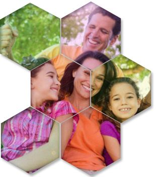

Fondos Mutuales
Cumpliendo con la razón que llevó a la creación de SOMEC y manteniendo el claro objetivo de la previsión, se generó el Fondo de Auxilio Mutual, cuyo objetivo es de ayudar y prevenir al asociado en las siguiente modalidades:
-
Auxilio del 100% por muerte no accidental o del 200% por muerte accidental.
-
Auxilio por desaparición forzosa, decretada por un juez de la república.
-
Auxilio en vida por cumplimiento de edad y antigüedad, con descuento predeterminado y diferencial de acuerdo a la edad.
-
Auxilio en vida por incapacidad total y permanente.
-
Auxilio complementario por continuidad. Las cuotas se ajustan a la edad de ingreso del asociado. Tanto los valores de las cuotas mensuales, como los valores de los auxilios se ajustan anualmente.
- Las cuotas se ajustan a la edad de ingreso del asociado.
- Tanto los valores de las cuotas mensuales, como los
valores de los auxilios se ajustan anualmente.
Con el pago de una mínima cuota mensual, la Cooperativa Somec encamina los recursos de este fondo, para ayudar a los asociados que por cualquier hecho súbito e imprevisto, no provocado voluntariamente, que afecte la vida, salud o ponga en grave su situación económica o la de su núcleo familiar, como accidentes, hospitalizaciones, hurtos entre otros.
Fondos Sociales
Con un porcentaje de los excedentes del ejercicio del año anterior, se alimenta este fondo para prestar ayuda económica a los asociados y sus familias en circunstancias especiales o situaciones de particular dificultad, en las cuales se hacer realidad la ayuda mutua, principalmente para los asociados, empleados y comunidad en general. Casos especiales como gastos médicos u hospilatorios no cubiertos por la EPS o por la medicina prepagada, incendios, inundaciones, entre otros.
Somec, realiza actividades orientadas a la capacitación Cooperativa de nuestros asociados e inversión en educación formal, de acuerdo a los planes del gobierno.